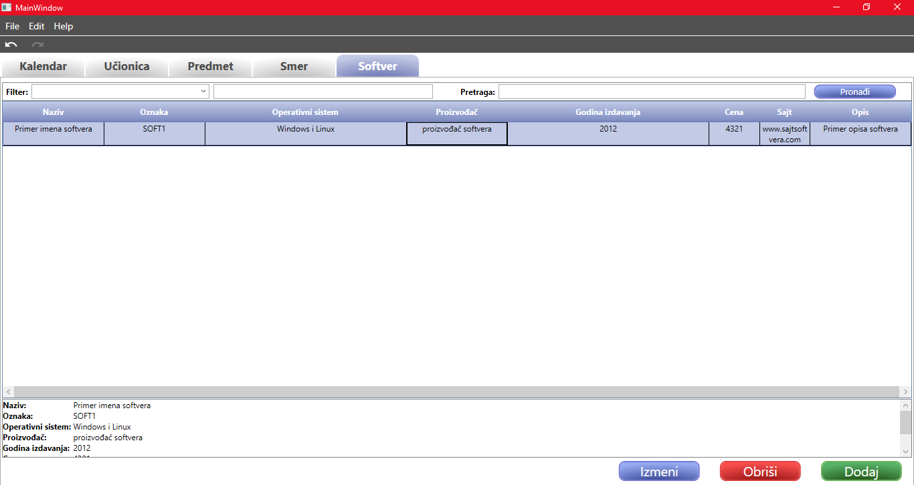
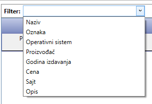

Tabelarni prikaz softvera
U ovom tabu se nalaze sve informacije u vezi sa softverima. Tabela sadrži sve softvere koji se nalaze u sistemu
i u njoj su prikazane sledeće informacije o softveru:
- Naziv
- Oznaka
- Operativni sistem
- Proizvođač
- Godina izdavanja
- Cena
- Sajt
- Opis
Kada se klikne misem na jedan od softvera iz tabele, ispod tabele će se pojaviti detaljniji prikaz informacija odabranog
softvera.

Dodavanje novog softvera
Dodavanje novog softvera se radi klikom na dugme Dodavanje ili prečicom na tastaturi Ctrl+T. Nakon
ove akcije otvara se novi prozor, koji je potrebno popuniti novim podacima.
Za detaljniju pomoć o prozoru za dodavanje novog softvera, kliknite ovde.
Izmena softvera
Izmena softvera se radi tako što se najpre selektuje željeni softver u tabeli, a zatim se klikne na dugme Izmeni
ili prečicom Ctrl+I. Nakon ove akcije, otvara se prozor koji sadrži sve podatke softvera koji je odabran za izmenu,
i u njemu korisnik može da unosi nove podatke.
Za detaljniju pomoć o prozoru za izmenu softvera, kliknite ovde.
Takođe, moguća je izmena podataka više softvera odjednom. To se radi tako što se selektuje više redova u tabeli,
držanjem dugmeta Shift i strelice ka gore ili dole. Nakon što su svi željeni softveri odabrani, klikom
Ctrl+I na tastaturi se otvara prozor za izmenu više podataka odjednom.
Detaljnije o tome možete pročitati ovde.
Brisanje softvera
Brisanje softvera se radi tako što se najpre selektuje jedan ili više softvera koje želite da obrišete. Brisanje
se pokreće klikom na dumge Obriši ili prečicom na tastaturi Ctr+Del. Zatim se pojavljuje prozor koji će
korisnika pitati da li je siguran da želi da obriše željene softvere. Ukoliko jeste, klikom na dugme DA,
brisanje se izvršava. Ako korisnik želi da odustane od brisanja, potrebno je da odabere mogućnost NE.
Pretraga softvera
Ukoliko ne postoji nijedna pojava ključne reci ("?oznaka", "?naziv", "?opis", "?proizvodjac", "?sajt", "?godina_izdavanja",
"?cena", "?=", "?!=", "?>", "?<", "?<=", "?>=")
u pretrazi, onda se pretraga izvršava tako što se uneta vrednost traži u svim obeležjima jednog softvera.
U suprotnom, radi se pretraga zasnovana na korišćenju upita. Dozvoljeno je postojanje jednog upita u polju za pretragu.
Ukoliko ih ima više, korisnik će biti obavešten o ograničenom broju istih.
Upit ima oblik _KLJUČNA_REC _OPERATOR _VREDNOST gde ključna reč može biti iz skupa ("?oznaka", "?naziv", "?opis", "?proizvođac",
"?sajt", "?godina_izdavanja", "?cena"),
operand iz skupa (?!=, ?=, ?>, ?<, ?<=, ?>=), dok vrednost može biti bilo šta. Ukoliko se kao ključna reč na početku upita
odabere neka iz skupa ?godina_izdavanja, tada vrednost koja se unosi nakon operatora mora biti ceo broj, kako bi upit bio validan.
Takođe, ukoliko je uneta ključna reč ?cena, tada vrednost nakon operatora mora biti ceo ili realan broj, kako bi upit bio validan.
Relacije koje se unose na mestu operatora imaju svoje standarno značenje i primenjuju se na obeležje softvera koje
je predstavljeno ključnom rečju sa pocetka upita.
Ukoliko bilo koje od pravila bude narušeno, korisniku će se pojaviti adekvatno obaveštenje.
Prečica na tastaturi da bi se fokusirala pretraga je Ctrl+Shift+P.
Filter nad tabelom
Filer funkcioniše tako što je potrebno najpre odabrati kriterijum po kome se vrši filtriranje. Kriterijum po kome je
moguće izvršiti filtriranje na tabelom, su podaci predmeta po kolonama. Listu kriterijuma filtera je moguće automatski
otvoriti pomoću Alt+Up ili Alt+Down prečica na tastaturi. Nakon što korisnik odabere kriterijum,
potrebno je da u tekstualnom polju za unos, koje se nalazi pored, unese tekst koji želi da pretražuje u tabeli.
Prečica na tastaturi da bi se fokusirao filter je Ctrl+Shift+F.

Link do početnog prozora za pomoć: Početna stranica